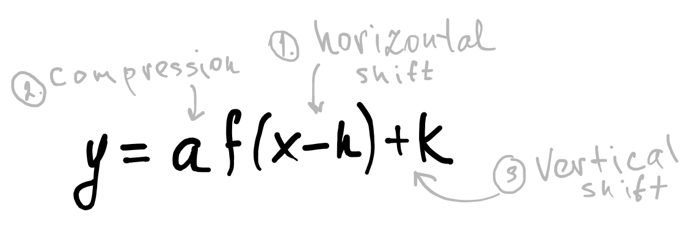

If \(a\), \(h\), and \(k\) are real numbers with \((a \neq 0)\), then \(y = aƒ(x - h) + k\) is a transformation of the function \(y = ƒ(x)\). All of the transformations of a function form a family of functions. For example, any function of the form \(y = a\sqrt{x - h} + k\) is in the square-root family, any function of the form \(y = a|x - h| + k\) is in the absolute value family, and any function of the form \(y = a(x - h)^2 + k\) is in the square or quadratic family. All of the functions in a family of functions have similar graphs. The graph of any function in the square or quadratic family is called a parabola.
If \(h > 0\), then the graph of \(y = ƒ(x - h)\) is a translation of \(h\) units to the right of the graph of \(y = ƒ(x)\). If \(h < 0\), then the graph of \(y = ƒ(x - h)\) is a translation of \(|h|\) units to the left of the graph of \(y = ƒ(x)\).
According to the order of operations, the first operation to perform in the formula \(y = aƒ(x - h) + k\) is to subtract \(h\) from \(x\). Then \(ƒ(x - h)\) is multiplied by \(a\), and finally \(k\) is added on.